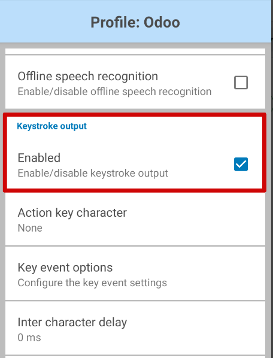

Set up your barcode scanner¶
Follow this guide to choose and set up a barcode scanner compatible with Odoo’s Inventory and Barcode apps.

An image of an example barcode scanner.¶
Scanner types¶
Before setting up a barcode scanner, it is important to determine which scanner type best meets the needs of the business. There are three main types, each with their own benefits and use cases:
USB scanners are connected to a computer, and are suitable for businesses that scan products at a fixed location, like at the checkout in a grocery store. Ensure the chosen USB scanner is compatible with the keyboard layout of the computer.
Bluetooth scanners pair with a smartphone or tablet, making them an ideal cost-effective and portable barcode scanner option. In this scenario, Odoo is installed on the smartphone, allowing warehouse operators to handle operations, and check stock directly through their mobile devices.
Mobile computer scanners are mobile devices with a built-in barcode scanner. First, ensure the device can run the Odoo mobile app properly. Recent models that use Android OS with the Google Chrome browser, or Windows OS with Microsoft Edge, should work. However, testing is crucial due to the variety of available models and configurations.
Configuration¶
When setting up the barcode scanner, make sure the following configurations are correct so the scanner can properly interpret barcodes with Odoo.
Keyboard layout¶
When using a USB barcode scanner, match its keyboard layout with the operating system’s layout for proper interpretation of characters. Generally, the scanning mode should be set to accept a USB keyboard (HID), with the language set based on the keyboard that is in use.
To configure the keyboard layout for a Zebra scanner, scan the keyboard wedge barcode for the desired language in the scanner’s user manual.

Examples of keyboard language settings in the Zebra scanner user manual.¶
Automatic carriage return¶
Odoo has a default 100-millisecond delay between scans to prevent accidental double scanning. To synchronize with the barcode scanner, set it to include a carriage return (character like the “Enter” key on a keyboard) after each scan. Odoo interprets the carriage return as the end of the barcode input; so Odoo accepts the scan, and waits for the next one.
Typically, on the scanner, a carriage return is included by default. Ensure it is set by scanning a
specific barcode in the user manual, like CR suffix ON or Apply Enter for suffix.
Zebra scanner¶
When using Zebra scanners, ensure the following keystroke configurations are set to prevent errors.
Begin on the Zebra scanner’s home screen, and select the DataWedge app (the icon for the app is a light blue barcode). On the DataWedge Profiles page, select the profile option to access the Zebra scanner’s settings.
Scroll down to the Keyboard Output option, and ensure the Enable/disable keystroke output option is Enabled.
Now, go back to the Profile options page, and select Key event options. Here, ensure the Send Characters as Events option is checked.